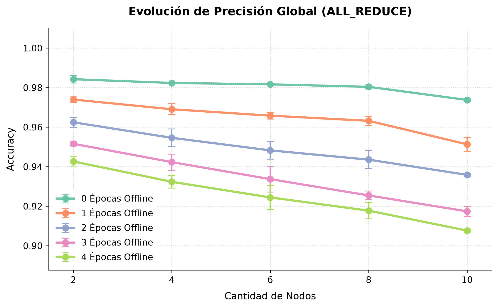
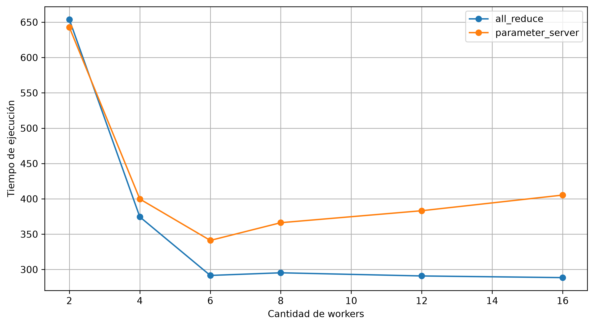
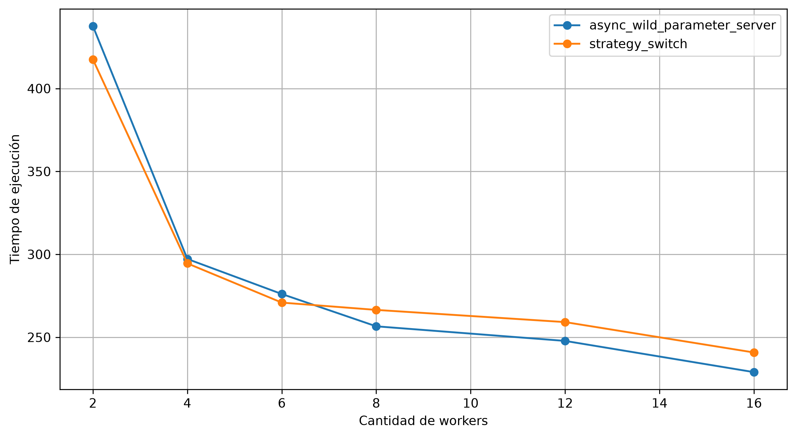
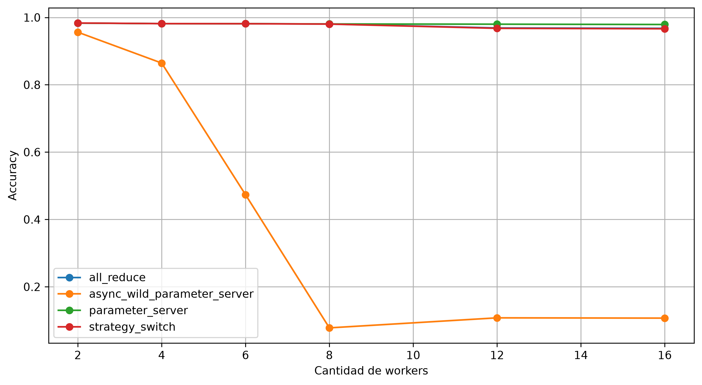

Entrenamiento distribuido de redes neuronales, escrito en Rust.

// basado en machine_learning/src/models.rs let model = Sequential::new(vec![ Layer::two_d_to4d(1, 28, 28), Layer::conv2d(10, 1, 5, 1, 0), Layer::max_pooling(2, 2, 0), Layer::four_d_to2d(10, 12, 12), Layer::dense((1440, 100)), Layer::sigmoid(1.0), Layer::dense((100, 10)), Layer::softmax(), ]);
La transformada de Fourier de una convolución es el producto punto a punto de las transformadas:
Con la transformada discreta, * es la convolución circular.
Costo para una imagen de n×n y un kernel de k×k.
# orchestra-py · basado en local.py training = strategy_switch( addrs=ADDRS, nservers=1, dataset=LocalDataset(...), optimizer=GradientDescent(lr=0.01), loss_fn=Mse(), sync=NonBlockingSync(), store=BlockingStore(), max_epochs=50, batch_size=256, ) trained = orchestrate(model, training).wait()



cat TODO.md
tolerancia a fallos
repetir PS asincrónico con BlockingStore
convolución: elegir el algoritmo según el tamaño
más arquitecturas: U-Net, recurrentes
medir la compresión por separado
TensorFlow (tf.distribute.Strategy) y PyTorch (DistributedDataParallel) envuelven la sincronización en una sola llamada, que fija cuatro decisiones:
¿Sincrónico o asincrónico?
¿Su estado vive en cada worker o en un nodo central?
¿Cómo se reparten los parámetros?
¿Cómo viajan los tensores?
Supuestos: mismo R en todos los nodos; encolado, propagación y procesamiento despreciables; placas full-duplex; S = Nparams × 2 bytes (f16).
Expresiones de elaboración propia a partir de la literatura citada.
Sumaba los gradientes en lugar de promediarlos: la tasa de aprendizaje efectiva escalaba con NW.
Al recuperar los pesos de los servidores no revertía el reparto de capas: modelo final desordenado.
Al conmutar, los fragmentos se asignaban en otro orden que el usado por el worker.
Ninguno rompía una prueba unitaria: cada componente hacía bien lo suyo. Los encontró la suite de benchmarks end-to-end.
cargo build --release
rendimiento sin recolector de basura
seguridad de memoria al compilar
concurrencia sin data races
async con tokio
orchestui · 4 nodos locales
Las diapositivas avanzan por etapas. Volver atrás restaura el estado completo de la etapa, sin animación.